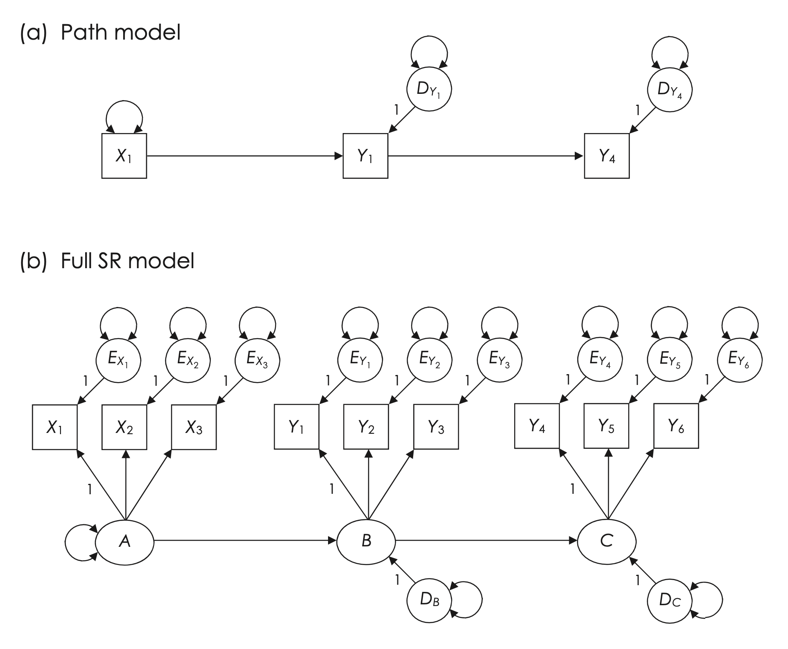
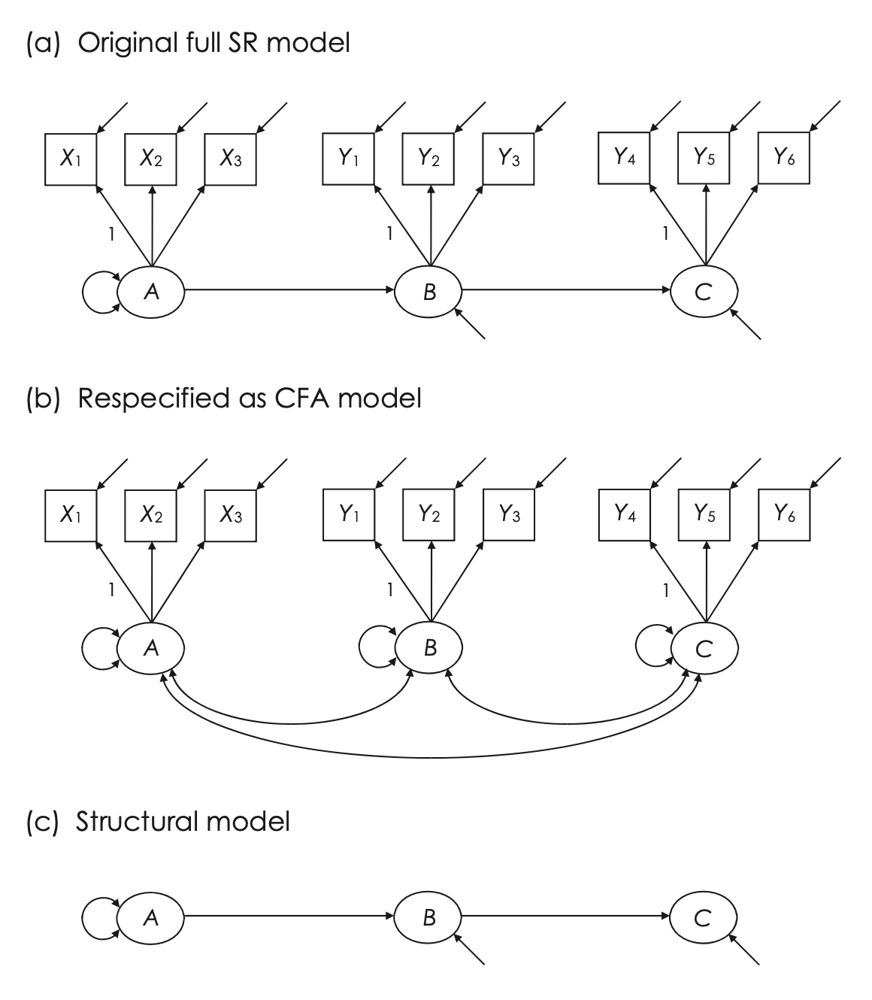
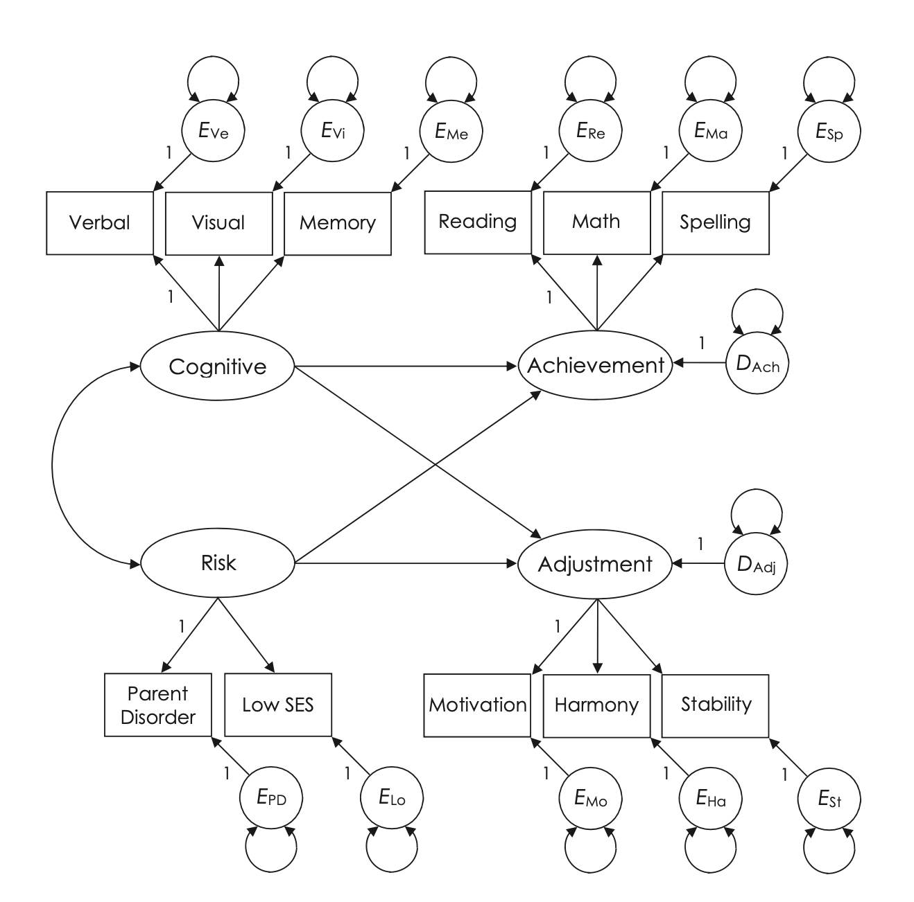
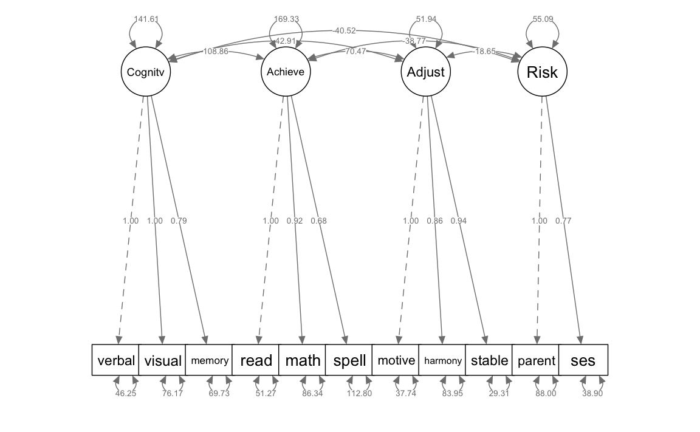
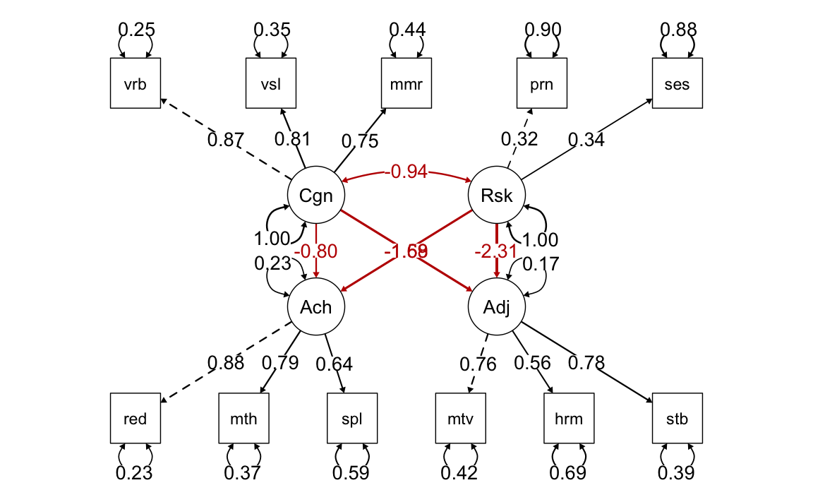
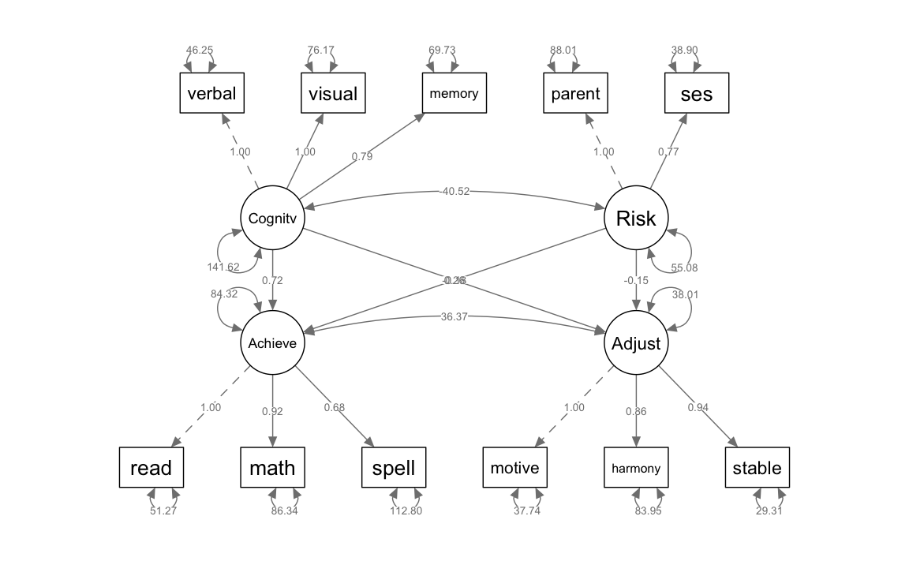

here::here("code", "_common.R") |>
source()
# Load packages
if (!requireNamespace("pacman")) install.packages("pacman")
pacman::p_load(lavaan, semPlot, patchwork, lme4)56 Modelli di Regressione Strutturale
In questo capitolo imparerai a:
- implementare e interpretare i modelli di regressione strutturale.
Prerequisiti
- Leggere il capitolo Structural Equation Modeling del testo di Petersen (2024).
Preparazione del Notebook
56.1 Introduzione
Un modello comunemente utilizzato nell’analisi delle equazioni strutturali (SEM) è il modello di regressione strutturale (Sr), noto anche come modello di percorso con variabili latenti o modello LISREL completo. Questo tipo di modello combina due componenti principali:
- Parte strutturale: rappresenta le ipotesi sugli effetti diretti e indiretti tra le variabili latenti o osservate. Questa sezione descrive le relazioni causali tra i fattori comuni.
- Parte di misurazione: rappresenta la relazione tra i fattori latenti e i loro indicatori osservati, definendo come i fattori comuni si manifestano attraverso le variabili misurate.
Il capitolo inizia affrontando la specificazione dei modelli Sr con indicatori continui, analizzando i requisiti per garantirne l’identificazione. In particolare, viene discusso come stabilire condizioni che consentano una stima coerente e interpretabile dei parametri del modello.
Successivamente, vengono presentate due strategie distinte per analizzare modelli Sr completi, in cui tutte le variabili nel modello strutturale sono fattori comuni con molteplici indicatori. Queste strategie si concentrano su:
- Identificazione delle fonti di errore di specificazione: analisi che separa la valutazione della parte di misurazione (validità degli indicatori) dall’analisi della parte strutturale (relazioni tra variabili latenti).
- Valutazione del modello: tecniche per comprendere come gli errori nella parte di misurazione influenzino le inferenze strutturali.
Inoltre, il capitolo esplora i modelli Sr parziali, in cui alcune variabili nella parte strutturale del modello sono rappresentate da indicatori singoli anziché da fattori comuni con molteplici indicatori. Viene illustrato un metodo specifico per gestire questo tipo di indicatori, permettendo di controllare esplicitamente gli errori di misurazione associati senza influire negativamente sull’adattamento globale del modello.
Il capitolo evidenzia l’importanza di distinguere chiaramente tra le componenti di misurazione e strutturali nei modelli Sr. Questo approccio non solo migliora la comprensione delle relazioni tra variabili latenti, ma aiuta anche a mitigare il rischio di errori di specificazione, aumentando l’affidabilità dei risultati ottenuti dall’analisi SEM.
56.2 Modello di Regressione Strutturale Completo
Nella Figura 56.1 (a) è rappresentato un modello di percorso con variabili manifeste. Viene assunto che la variabile esogena X1 sia misurata senza errore, sebbene questa assunzione sia spesso violata nella pratica. Le variabili endogene nel modello, come Y1 e Y4, possono avere errori casuali che si manifestano nelle loro perturbazioni.

La Figura 56.1 (b) illustra un modello di Regressione Strutturale (SR) completo, che integra sia componenti strutturali sia di misurazione. In questo modello SR, a differenza del modello di percorso, ciascun indicatore (X1, Y1, Y4) è definito come uno tra numerosi indicatori associati a un fattore comune. Di conseguenza, tutte le variabili osservabili in questa figura includono termini di errore.
Nella parte strutturale del modello, presentata nella Figura 56.1 (b), si osserva la rappresentazione degli stessi schemi di effetti causali diretti e indiretti trovati nel modello di percorso mostrato nella 56.1, ma applicati ai fattori comuni.
Per quanto riguarda l’analisi delle medie, le osservazioni e i parametri nei modelli SR sono trattati allo stesso modo di quelli nei modelli di percorso e nei modelli di Analisi Fattoriale Confermativa (CFA), conformemente alle regole precedentemente stabilite.
L’identificazione di un modello SR completo avviene quando sia la sua componente di misurazione, riformulata come un modello CFA, sia la parte strutturale risultano identificate. La regola di identificazione in due fasi implica che, per determinare se un modello SR completo sia identificato, è necessario esaminare separatamente ciascuna delle sue parti, ovvero quelle di misurazione e strutturale.
56.3 Modellazione in Due Fasi
Immaginiamo che un ricercatore abbia definito un modello di Regressione Strutturale (SR) completo, come mostrato nella Figura 56.1(a). Dopo aver raccolto i dati, il ricercatore adotta un approccio monofase per analizzare il modello, eseguendo una stima simultanea delle componenti di misurazione e strutturali. Tuttavia, i risultati rivelano che il modello non si adatta bene ai dati. Ciò solleva interrogativi sulla localizzazione del problema: è nella parte di misurazione, nella parte strutturale, o in entrambe? Identificare la fonte del problema con precisione può essere complesso usando un approccio monofase.

La modellazione in due fasi, proposta da Anderson e Gerbing (1988), affronta questa difficoltà separando l’analisi in due momenti distinti.
Nel primo passaggio, il modello SR viene riformulato in un modello CFA per testare esclusivamente le relazioni tra i costrutti latenti e i loro indicatori. Un cattivo adattamento del modello CFA indica problemi nelle ipotesi sulla misurazione (ad esempio, carichi fattoriali errati o struttura del modello incoerente). Solo se il modello CFA è valido si passa al secondo passaggio, in cui vengono analizzate le relazioni strutturali tra i costrutti latenti. In questa fase, si confrontano il modello SR originale e varianti alternative per identificare la struttura più adatta.
56.3.1 Limiti e Sfide della Modellazione in Due Fasi
La modellazione in due fasi presenta alcuni limiti. Il processo richiede numerose decisioni, come la riformulazione dei modelli CFA e SR, che possono generare un “giardino dei sentieri che si biforcano”, aumentando il rischio di interpretazioni errate. Inoltre, test ripetuti sullo stesso dataset possono portare a risultati influenzati da variazioni casuali.
Un altro problema riguarda i modelli equivalenti. Ad esempio, un modello CFA e un modello SR con una parte strutturale appena identificata possono risultare indistinguibili statisticamente. In questi casi, la scelta tra i modelli deve basarsi su criteri teorici o sul design dello studio.
Infine, se i carichi fattoriali cambiano tra modelli strutturali differenti, ciò indica che il modello di misurazione non è stabile, complicando ulteriormente l’interpretazione.
56.3.2 Considerazioni Finali
La modellazione in due fasi offre un metodo utile per diagnosticare e risolvere problemi nei modelli SR, ma va utilizzata con attenzione. Le statistiche di adattamento, come il chi-quadro, il CFI o il RMSEA, sono spesso più sensibili alla parte di misurazione rispetto a quella strutturale. Inoltre, soglie standard per questi indici non sono sempre applicabili universalmente, e l’interpretazione dipende dal tipo di modello e dai dati.
L’approccio bifase permette di isolare e analizzare separatamente i problemi nelle componenti di misurazione e strutturali, ma richiede un’analisi teoricamente solida per evitare di incorrere in errori metodologici o interpretativi.
56.4 Una Applicazione Concreta
La Figura 56.3 illustra un modello SR (Regressione Strutturale) iniziale che esplora il rendimento scolastico e l’adattamento in aula di studenti di età media corrispondente ai gradi 7-8. Il modello considera l’influenza dell’abilità cognitiva generale e del livello di rischio di disturbi psicopatologici. Uno degli indicatori di rischio deriva dalla diagnosi di disturbi psichiatrici maggiori nei genitori, mentre il secondo è basato sul livello socio-economico (SES) della famiglia, con punteggi più alti che indicano un SES inferiore. Le abilità cognitive sono valutate tramite i punteggi in ragionamento verbale, analisi visivo-spaziale e memoria, ottenuti da un test di QI somministrato individualmente.

Il modello comprende due fattori endogeni: il rendimento scolastico, valutato attraverso test standardizzati di lettura, aritmetica e ortografia, e l’adattamento in classe, misurato con tre indicatori forniti dagli insegnanti riguardo alla motivazione, stabilità emotiva e qualità delle relazioni sociali degli studenti. In questo modello strutturale, sia il rendimento scolastico sia l’adattamento in classe sono influenzati dall’abilità cognitiva e dal rischio, ma non vi è un effetto diretto o una covarianza delle perturbazioni tra questi due fattori endogeni, indicando che eventuali associazioni tra di essi sono attribuibili alle loro cause comuni, i fattori esogeni.
# input the correlations in lower diagnonal form
worlandLower.cor <- "
1.00
.70 1.00
.65 .60 1.00
.55 .50 .45 1.00
.50 .45 .40 .70 1.00
.35 .35 .30 .55 .50 1.00
.30 .30 .30 .50 .45 .44 1.00
.25 .20 .22 .41 .28 .34 .40 1.00
.35 .32 .32 .48 .45 .42 .60 .45 1.00
-.25 -.24 -.22 -.21 -.18 -.15 -.15 -.12 -.17 1.00
-.22 -.26 -.30 -.25 -.22 -.18 -.17 -.14 -.20 .42 1.00 "
# name the variables and convert to full correlation matrix
worland.cor <- lavaan::getCov(worlandLower.cor, names = c(
"verbal", "visual",
"memory", "read", "math", "spell", "motive", "harmony", "stable", "parent", "ses"
))
# add the standard deviations and convert to covariances
worland.cov <- lavaan::cor2cov(worland.cor,
sds = c(
13.75, 14.80, 12.60, 14.90, 15.25, 13.85, 9.50, 11.10, 8.70,
12.00, 8.50
)
)Primo Passaggio nella modellazione in due fasi per un modello SR completo di rendimento scolastico e adattamento in classe
# 4-factor CFA
worlandCFA.model <- "
Cognitive =~ verbal + visual + memory
Achieve =~ read + math + spell
Adjust =~ motive + harmony + stable
Risk =~ parent + ses
"worlandCFA <- lavaan::cfa(worlandCFA.model,
sample.cov = worland.cov,
sample.nobs = 158
)semPlot::semPaths(worlandCFA,
what = "col", whatLabels = "par", style = "mx",
layout = "tree2", nCharNodes = 7,
shapeMan = "rectangle", sizeMan = 8, sizeMan2 = 5
)
# predicted correlation matrix for factors
lavaan::lavInspect(worlandCFA, "cor.lv") |> print()
#> Cogntv Achiev Adjust Risk
#> Cognitive 1.000
#> Achieve 0.703 1.000
#> Adjust 0.500 0.751 1.000
#> Risk -0.459 -0.401 -0.349 1.000lavaan::residuals(worlandCFA, type = "standardized.mplus") |> print()
#> $type
#> [1] "standardized.mplus"
#>
#> $cov
#> verbal visual memory read math spell motive harmny stable
#> verbal 0.000
#> visual 0.000 0.000
#> memory 0.123 -0.130 0.000
#> read 0.598 0.113 -0.285 0.000
#> math 0.505 0.038 -0.377 0.597 0.000
#> spell -0.952 -0.255 -0.704 -0.667 -0.206 0.000
#> motive -0.821 -0.157 0.310 -0.042 -0.078 1.484 0.000
#> harmony 0.117 -0.453 0.171 0.942 -1.179 1.196 -1.010 0.000
#> stable 0.285 0.112 0.566 -1.893 -0.467 0.942 0.422 0.436 0.000
#> parent -0.092 -0.260 -0.157 0.234 0.379 0.157 0.301 0.020 -0.022
#> ses 1.890 -0.247 -1.417 -0.370 -0.114 -0.112 0.213 -0.125 -0.362
#> parent ses
#> verbal
#> visual
#> memory
#> read
#> math
#> spell
#> motive
#> harmony
#> stable
#> parent 0.000
#> ses 0.000 0.000lavaan::residuals(worlandCFA, type = "cor.bollen") |> print()
#> $type
#> [1] "cor.bollen"
#>
#> $cov
#> verbal visual memory read math spell motive harmny stable
#> verbal 0.000
#> visual 0.000 0.000
#> memory 0.001 -0.002 0.000
#> read 0.015 0.003 -0.010 0.000
#> math 0.017 0.001 -0.016 0.007 0.000
#> spell -0.040 -0.012 -0.035 -0.010 -0.006 0.000
#> motive -0.031 -0.007 0.016 -0.001 -0.003 0.075 0.000
#> harmony 0.006 -0.026 0.010 0.041 -0.053 0.071 -0.027 0.000
#> stable 0.011 0.005 0.028 -0.034 -0.015 0.045 0.005 0.012 0.000
#> parent -0.003 -0.010 -0.007 0.008 0.017 0.009 0.015 0.001 -0.001
#> ses 0.050 -0.010 -0.068 -0.012 -0.005 -0.006 0.010 -0.008 -0.016
#> parent ses
#> verbal
#> visual
#> memory
#> read
#> math
#> spell
#> motive
#> harmony
#> stable
#> parent 0.000
#> ses 0.000 0.000# calculate factor reliability coefficients (semTools)
semTools::reliability(worlandCFA) |> print()
#> Cognitive Achieve Adjust Risk
#> alpha 0.846 0.809 0.725 0.568
#> omega 0.851 0.821 0.730 0.577
#> omega2 0.851 0.821 0.730 0.577
#> omega3 0.852 0.823 0.733 0.577
#> avevar 0.659 0.610 0.474 0.409Secondo Passaggio nella modellazione in due fasi per un modello SR completo di rendimento scolastico e adattamento in classe
I risultati del Passaggio 1 del metodo in due fasi, che si concentrava sul modello di misurazione, consentono di procedere all’analisi del modello SR originale, che prevede cinque percorsi nella Figura 56.3, nel Passaggio 2 del metodo. Anche questa seconda analisi ha portato a una soluzione ammissibile.
# step 2a
# 4-factor SR model with 5 paths among factors
# by default, lavaan frees the disturbance covariance
# between a pair of outcomes in a structural model
# when there is no direct effect between them
# thus, this parameter is explicitly fixed to zero
# in this analysis
worlandSRa_model <- "
# measurement part
Cognitive =~ verbal + visual + memory
Achieve =~ read + math + spell
Adjust =~ motive + harmony + stable
Risk =~ parent + ses
# structural part (5 paths)
Achieve ~ Cognitive + Risk
Adjust ~ Cognitive + Risk
# constrain disturbance covariance to zero
Adjust ~~ 0*Achieve
"worlandSRa <- lavaan::sem(worlandSRa_model,
sample.cov = worland.cov,
sample.nobs = 158
)semPaths(
worlandSRa,
"std",
posCol = c("black"),
edge.label.cex = 1.2,
sizeMan = 7,
edge.width = 0.4, # Set a fixed width for all arrows
fade = FALSE # Disable fading of the arrows
)
lavaan::residuals(worlandSRa, type = "standardized.mplus") |> print()
#> $type
#> [1] "standardized.mplus"
#>
#> $cov
#> verbal visual memory read math spell motive harmny stable
#> verbal 0.002
#> visual 0.209 0.002
#> memory 0.204 -0.221 0.002
#> read 0.671 0.115 -0.298 0.004
#> math 0.562 0.043 -0.384 0.596 0.002
#> spell -0.902 -0.252 -0.709 -0.670 -0.201 0.000
#> motive -0.777 -0.158 0.304 0.030 -0.026 1.506 0.000
#> harmony 0.132 -0.456 0.165 0.962 -1.151 1.208 -0.997 0.000
#> stable 0.307 0.102 0.554 -1.797 -0.427 0.959 0.421 0.426 0.000
#> parent 0.229 0.003 0.057 0.544 0.602 0.308 0.446 0.118 0.158
#> ses 2.082 0.015 -1.204 0.009 0.133 0.043 0.362 -0.024 -0.143
#> parent ses
#> verbal
#> visual
#> memory
#> read
#> math
#> spell
#> motive
#> harmony
#> stable
#> parent NA
#> ses 4.056 0.003lavaan::residuals(worlandSRa, type = "cor.bollen") |> print()
#> $type
#> [1] "cor.bollen"
#>
#> $cov
#> verbal visual memory read math spell motive harmny stable
#> verbal 0.000
#> visual 0.002 0.000
#> memory 0.003 -0.004 0.000
#> read 0.018 0.003 -0.010 0.000
#> math 0.019 0.002 -0.016 0.007 0.000
#> spell -0.038 -0.012 -0.036 -0.010 -0.006 0.000
#> motive -0.029 -0.007 0.015 0.001 -0.001 0.076 0.000
#> harmony 0.007 -0.026 0.010 0.042 -0.052 0.072 -0.026 0.000
#> stable 0.012 0.004 0.027 -0.033 -0.013 0.046 0.005 0.012 0.000
#> parent 0.007 0.000 0.003 0.021 0.028 0.018 0.023 0.008 0.008
#> ses 0.059 0.001 -0.058 0.000 0.006 0.003 0.018 -0.002 -0.007
#> parent ses
#> verbal
#> visual
#> memory
#> read
#> math
#> spell
#> motive
#> harmony
#> stable
#> parent 0.000
#> ses 0.312 0.000Sebbene gli indici di fit siano buoni, l’adattamento locale del modello con cinque percorsi tra i fattori è scarso. Ad esempio, i residui standardizzati per diverse coppie di indicatori dei fattori di rendimento e adattamento hanno spesso un valore maggiore di 2:
- Lettura, Motivazione, 3.466
- Ortografia, Motivazione, 3.348
- Lettura, Armonia, 2.903
Basandosi su tutti questi risultati relativi all’adattamento globale e locale, il modello SR iniziale nella Figura 56.3 con cinque percorsi tra i fattori è rifiutato.
Esaminiamo i modification indices.
modificationIndices(worlandSRa, sort = TRUE, minimum.value = 5)
#> lhs op rhs mi epc sepc.lv sepc.all sepc.nox
#> 125 Achieve ~ Adjust 20 115.2 63.7 63.746 63.746
#> 120 parent ~~ ses 20 32.6 32.6 0.361 0.361
#> 126 Adjust ~ Achieve 20 26.1 47.2 47.200 47.200I risultati dei modification indices mostrano che l’assenza di un percorso tra i fattori di rendimento e adattamento nella Figura 56.3 è chiaramente incoerente con i dati. Per aggiungere una covariazione tra i fattori di rendimento e adattamento abbiamo due opzioni: o aggiungere un effetto diretto tra i fattori o permettere alle loro perturbazioni di covariare. Ma sarebbe difficile giustificare un effetto diretto rispetto all’altro: scarse abilità scolastiche potrebbero peggiorare l’adattamento in classe tanto quanto i problemi comportamentali a scuola potrebbero influire negativamente sul rendimento. La specificazione di una causalità reciproca tra Rendimento e Adattamento renderebbe il modello strutturale non ricorsivo, ma il modello non sarebbe identificato senza imporre vincoli irrealistici. Riformuliamo dunque il modello della fig-kline-15-3 permettendo alle perturbazioni tra i fattori di rendimento e adattamento di covariare.
# step 2b
# 4-factor SR model with 6 paths among factors
# this model is equivalent to the basic 4-factor
# CFA measurement model analyzed in step 1
worlandSRb_model <- "
# measurement part
Cognitive =~ verbal + visual + memory
Achieve =~ read + math + spell
Adjust =~ motive + harmony + stable
Risk =~ parent + ses
# structural part (6 paths)
Achieve ~ Cognitive + Risk
Adjust ~ Cognitive + Risk
Adjust ~~ Achieve
"worlandSRb <- lavaan::sem(worlandSRb_model,
sample.cov = worland.cov,
sample.nobs = 158
)semPlot::semPaths(worlandSRb,
what = "col", whatLabels = "par", style = "mx",
layout = "tree2", nCharNodes = 7,
shapeMan = "rectangle", sizeMan = 8, sizeMan2 = 5
)
parameterEstimates(worlandSRb) |> print()
#> lhs op rhs est se z pvalue ci.lower ci.upper
#> 1 Cognitive =~ verbal 1.000 0.000 NA NA 1.000 1.000
#> 2 Cognitive =~ visual 1.000 0.090 11.144 0.000 0.824 1.175
#> 3 Cognitive =~ memory 0.788 0.077 10.217 0.000 0.637 0.940
#> 4 Achieve =~ read 1.000 0.000 NA NA 1.000 1.000
#> 5 Achieve =~ math 0.925 0.083 11.100 0.000 0.761 1.088
#> 6 Achieve =~ spell 0.678 0.080 8.480 0.000 0.521 0.835
#> 7 Adjust =~ motive 1.000 0.000 NA NA 1.000 1.000
#> 8 Adjust =~ harmony 0.861 0.136 6.311 0.000 0.593 1.128
#> 9 Adjust =~ stable 0.940 0.114 8.231 0.000 0.716 1.164
#> 10 Risk =~ parent 1.000 0.000 NA NA 1.000 1.000
#> 11 Risk =~ ses 0.773 0.224 3.445 0.001 0.333 1.212
#> 12 Achieve ~ Cognitive 0.719 0.109 6.574 0.000 0.504 0.933
#> 13 Achieve ~ Risk -0.175 0.190 -0.922 0.357 -0.548 0.198
#> 14 Adjust ~ Cognitive 0.261 0.070 3.743 0.000 0.124 0.398
#> 15 Adjust ~ Risk -0.146 0.127 -1.153 0.249 -0.395 0.102
#> 16 Achieve ~~ Adjust 36.374 7.967 4.565 0.000 20.758 51.989
#> 17 verbal ~~ verbal 46.253 9.782 4.728 0.000 27.080 65.426
#> 18 visual ~~ visual 76.171 12.153 6.268 0.000 52.351 99.991
#> 19 memory ~~ memory 69.732 9.717 7.177 0.000 50.688 88.776
#> 20 read ~~ read 51.273 11.238 4.562 0.000 29.246 73.299
#> 21 math ~~ math 86.341 13.049 6.616 0.000 60.764 111.917
#> 22 spell ~~ spell 112.797 14.078 8.012 0.000 85.205 140.389
#> 23 motive ~~ motive 37.737 6.463 5.839 0.000 25.071 50.404
#> 24 harmony ~~ harmony 83.953 10.590 7.927 0.000 63.197 104.709
#> 25 stable ~~ stable 29.306 5.386 5.441 0.000 18.749 39.863
#> 26 parent ~~ parent 88.005 18.343 4.798 0.000 52.053 123.958
#> 27 ses ~~ ses 38.896 10.208 3.810 0.000 18.889 58.904
#> 28 Cognitive ~~ Cognitive 141.617 22.098 6.409 0.000 98.307 184.928
#> 29 Achieve ~~ Achieve 84.317 16.324 5.165 0.000 52.322 116.312
#> 30 Adjust ~~ Adjust 38.008 8.188 4.642 0.000 21.960 54.055
#> 31 Risk ~~ Risk 55.079 19.989 2.755 0.006 15.902 94.257
#> 32 Cognitive ~~ Risk -40.517 12.448 -3.255 0.001 -64.914 -16.119# predicted correlation matrix for factors
lavaan::lavInspect(worlandSRb, "cor.lv") |> print()
#> Cogntv Achiev Adjust Risk
#> Cognitive 1.000
#> Achieve 0.703 1.000
#> Adjust 0.500 0.751 1.000
#> Risk -0.459 -0.401 -0.349 1.000lavaan::residuals(worlandSRb, type = "standardized.mplus") |> print()
#> $type
#> [1] "standardized.mplus"
#>
#> $cov
#> verbal visual memory read math spell motive harmny stable
#> verbal NA
#> visual -0.002 NA
#> memory 0.122 -0.131 NA
#> read 0.597 0.113 -0.285 NA
#> math 0.504 0.038 -0.377 0.597 NA
#> spell -0.952 -0.255 -0.704 -0.667 -0.206 NA
#> motive -0.821 -0.157 0.309 -0.042 -0.078 1.484 NA
#> harmony 0.117 -0.453 0.171 0.942 -1.179 1.196 -1.010 NA
#> stable 0.284 0.112 0.566 -1.893 -0.467 0.942 0.422 0.436 NA
#> parent -0.093 -0.261 -0.157 0.234 0.378 0.157 0.300 0.019 -0.022
#> ses 1.891 -0.247 -1.417 -0.370 -0.114 -0.112 0.213 -0.125 -0.362
#> parent ses
#> verbal
#> visual
#> memory
#> read
#> math
#> spell
#> motive
#> harmony
#> stable
#> parent 0.034
#> ses 0.043 0.017lavaan::residuals(worlandSRb, type = "cor.bollen") |> print()
#> $type
#> [1] "cor.bollen"
#>
#> $cov
#> verbal visual memory read math spell motive harmny stable
#> verbal 0.000
#> visual 0.000 0.000
#> memory 0.001 -0.002 0.000
#> read 0.015 0.003 -0.010 0.000
#> math 0.017 0.001 -0.016 0.007 0.000
#> spell -0.040 -0.012 -0.036 -0.010 -0.006 0.000
#> motive -0.031 -0.007 0.016 -0.001 -0.003 0.075 0.000
#> harmony 0.006 -0.026 0.010 0.041 -0.053 0.071 -0.027 0.000
#> stable 0.011 0.005 0.028 -0.034 -0.015 0.045 0.005 0.012 0.000
#> parent -0.003 -0.011 -0.007 0.008 0.017 0.009 0.015 0.001 -0.001
#> ses 0.050 -0.010 -0.068 -0.012 -0.005 -0.006 0.010 -0.008 -0.016
#> parent ses
#> verbal
#> visual
#> memory
#> read
#> math
#> spell
#> motive
#> harmony
#> stable
#> parent 0.000
#> ses 0.000 0.000Confrontiamo i due modelli con il test del rapporto di verosimiglianza.
lavTestLRT(worlandSRa, worlandSRb)
#>
#> Chi-Squared Difference Test
#>
#> Df AIC BIC Chisq Chisq diff RMSEA Df diff Pr(>Chisq)
#> worlandSRb 38 12938 13024 16.2
#> worlandSRa 39 12957 13040 37.3 21.1 0.357 1 4.3e-06L’adattamento del modello SR con 5 percorsi tra i fattori è significativamente peggiore rispetto a quello del modello CFA con 6 percorsi. Gli indici di fit del modello con 6 percorsi sono buoni così come il suo adattamento locale.
# standardized estimates with standard errors
lavaan::standardizedSolution(worlandSRb) |> print()
#> lhs op rhs est.std se z pvalue ci.lower ci.upper
#> 1 Cognitive =~ verbal 0.868 0.032 27.075 0.000 0.805 0.931
#> 2 Cognitive =~ visual 0.806 0.037 21.720 0.000 0.733 0.879
#> 3 Cognitive =~ memory 0.747 0.043 17.470 0.000 0.663 0.831
#> 4 Achieve =~ read 0.876 0.031 28.212 0.000 0.815 0.937
#> 5 Achieve =~ math 0.791 0.038 20.777 0.000 0.717 0.866
#> 6 Achieve =~ spell 0.639 0.053 11.984 0.000 0.534 0.743
#> 7 Adjust =~ motive 0.761 0.049 15.552 0.000 0.665 0.857
#> 8 Adjust =~ harmony 0.561 0.065 8.657 0.000 0.434 0.688
#> 9 Adjust =~ stable 0.781 0.048 16.381 0.000 0.688 0.875
#> 10 Risk =~ parent 0.620 0.100 6.217 0.000 0.425 0.816
#> 11 Risk =~ ses 0.677 0.104 6.495 0.000 0.473 0.881
#> 12 Achieve ~ Cognitive 0.657 0.079 8.357 0.000 0.503 0.811
#> 13 Achieve ~ Risk -0.100 0.107 -0.935 0.350 -0.310 0.110
#> 14 Adjust ~ Cognitive 0.431 0.103 4.179 0.000 0.229 0.633
#> 15 Adjust ~ Risk -0.151 0.127 -1.186 0.236 -0.400 0.098
#> 16 Achieve ~~ Adjust 0.643 0.085 7.592 0.000 0.477 0.808
#> 17 verbal ~~ verbal 0.246 0.056 4.421 0.000 0.137 0.355
#> 18 visual ~~ visual 0.350 0.060 5.847 0.000 0.233 0.467
#> 19 memory ~~ memory 0.442 0.064 6.920 0.000 0.317 0.567
#> 20 read ~~ read 0.232 0.054 4.271 0.000 0.126 0.339
#> 21 math ~~ math 0.374 0.060 6.197 0.000 0.255 0.492
#> 22 spell ~~ spell 0.592 0.068 8.686 0.000 0.458 0.725
#> 23 motive ~~ motive 0.421 0.074 5.649 0.000 0.275 0.567
#> 24 harmony ~~ harmony 0.686 0.073 9.445 0.000 0.543 0.828
#> 25 stable ~~ stable 0.390 0.075 5.229 0.000 0.244 0.536
#> 26 parent ~~ parent 0.615 0.124 4.967 0.000 0.372 0.858
#> 27 ses ~~ ses 0.542 0.141 3.840 0.000 0.265 0.818
#> 28 Cognitive ~~ Cognitive 1.000 0.000 NA NA 1.000 1.000
#> 29 Achieve ~~ Achieve 0.498 0.077 6.470 0.000 0.347 0.649
#> 30 Adjust ~~ Adjust 0.732 0.080 9.108 0.000 0.574 0.889
#> 31 Risk ~~ Risk 1.000 0.000 NA NA 1.000 1.000
#> 32 Cognitive ~~ Risk -0.459 0.098 -4.686 0.000 -0.651 -0.267La correlazione stimata tra i fattori esogeni abilità cognitiva e rischio, –.459, è sensata: è negativa (più alto il rischio, minore l’abilità cognitiva). Questa correlazione non è prossima a -1.0, il che suggerisce che i due fattori sono distinti e non quasi identici, confermando così l’ipotesi di validità discriminante.
Analizzando gli impatti specifici, un incremento di un punto nel fattore cognitivo (misurato come varianza comune del ragionamento verbale) prevede un aumento di .719 punti nel rendimento scolastico (misurato come varianza comune dell’abilità di lettura), tenendo conto del fattore di rischio. In termini standardizzati, un aumento di una deviazione standard nell’abilità cognitiva si traduce in un aumento di .657 deviazioni standard nel rendimento scolastico, sempre controllando per il rischio.
L’influenza del rischio sul rendimento scolastico è meno marcata: un incremento di un punto nel rischio (misurato come varianza comune del disturbo genitoriale) prevede una diminuzione di .175 punti nel rendimento scolastico. Standardizzando, un aumento di una deviazione standard nel rischio si associa a una diminuzione di .100 deviazioni standard nel rendimento, controllando per l’abilità cognitiva.
La correlazione di perturbazione di .643 misura la relazione tra il rendimento scolastico e l’adattamento in classe, dopo aver escluso l’influenza di altri fattori noti, in questo caso l’abilità cognitiva e il rischio di psicopatologia. In termini più semplici, la correlazione di perturbazione ci dice quanto sono correlati il rendimento scolastico e l’adattamento in classe quando si tiene conto (o si “controlla”) dell’effetto dell’abilità cognitiva e del rischio. Un valore di .643 indica una correlazione moderatamente forte, suggerendo che quando il rendimento scolastico di uno studente migliora (o peggiora), anche il suo adattamento in classe tende a migliorare (o peggiorare) in modo simile, indipendentemente dal suo livello di abilità cognitiva o dal grado di rischio di psicopatologia.
La presenza di questa correlazione parziale sostanziale implica che ci sono fattori non misurati nel modello che influenzano sia il rendimento scolastico sia l’adattamento in classe. Questi fattori non misurati potrebbero includere variabili come il sostegno familiare, la qualità dell’insegnamento, fattori ambientali o personalità dello studente. Importante è che questi fattori non misurati sono distinti sia dall’abilità cognitiva dello studente sia dal suo rischio di psicopatologia. In conclusione, il valore di .643 non solo mette in luce l’interdipendenza tra rendimento scolastico e adattamento in classe, ma suggerisce anche l’esistenza di altre variabili influenti che non sono state direttamente misurate o incluse nel modello. Questa informazione può essere preziosa per indirizzare ulteriori ricerche o interventi educativi.
56.5 Strategie Avanzate di Modellazione per i Modelli di Regressione Strutturale
Oltre all’approccio tradizionale di modellazione in due fasi, esiste un metodo più complesso a quattro fasi per analizzare i modelli SR completi. Questa strategia, introdotta da Mulaik e Millsap nel 2000, amplia la modellazione bifase aggiungendo ulteriori analisi esplorative che possono portare a conclusioni più definitive in una serie più estesa di studi. Questo metodo prevede che ogni fattore comune abbia almeno quattro indicatori, numero ritenuto sufficiente per testare l’unidimensionalità con il test dell’annullamento della tetrade. I quattro indicatori rappresentano anche il numero minimo perché un modello CFA a singolo fattore sia considerato sovraidentificato. Il ricercatore testa quindi una serie di almeno quattro modelli gerarchicamente correlati, seguendo questi passaggi:
Primo Passaggio: Il modello iniziale meno restrittivo è un modello EFA, dove ogni indicatore satura su tutti i fattori. Il numero di fattori è lo stesso dei modelli analizzati nei passaggi successivi. Questo modello viene analizzato con lo stesso metodo di stima utilizzato nei passaggi successivi, ad esempio il metodo ML per indicatori continui e normalmente distribuiti. Alternativamente, si possono usare tecniche come ESEM o E/CFA al posto dell’EFA. Questo passaggio serve a testare la correttezza provvisoria delle ipotesi riguardo al numero di fattori.
Secondo Passaggio: Corrisponde al Primo Passaggio della modellazione bifase. Qui, si specifica un modello CFA con alcuni carichi incrociati fissati a zero, identificando gli indicatori che non dipendono da certi fattori comuni. Se l’adattamento del modello CFA è ragionevole, si può procedere al test del modello SR; in caso contrario, il modello di misurazione va rivisto.
Terzo Passaggio: Si specifica il modello SR target con lo stesso schema di carichi incrociati fissati a zero del modello CFA del Secondo Passaggio. Tipicamente, la parte strutturale del modello SR include meno effetti diretti rispetto al totale delle covarianze tra fattori nel modello CFA. Se la parte strutturale del modello SR ha tanti percorsi quanti il modello CFA, i due modelli saranno equivalenti e questo passaggio può essere omesso.
Quarto Passaggio: Coinvolge test su ipotesi specifiche sui parametri definiti dall’inizio del processo. Questi test possono comportare l’applicazione di vincoli zero o altri, aumentando di uno dfM. I Passaggi 3 e 4 della modellazione a quattro fasi rappresentano una precisazione delle attività generali del Secondo Passaggio della modellazione bifase.
Una delle critiche alla modellazione a quattro fasi riguarda la necessità di avere almeno quattro indicatori per fattore, condizione non sempre pratica o desiderabile, specialmente quando pochi indicatori, o anche un singolo indicatore ottimale, presentano migliori caratteristiche psicometriche rispetto a quattro. Tuttavia, Mulaik e Millsap hanno osservato che avere almeno quattro indicatori può compensare, in parte, le limitazioni di un campione più piccolo incrementando dfM.
Entrambi gli approcci, bifase e quattro fasi, sfruttano la variazione casuale quando i modelli vengono testati e riformulati utilizzando gli stessi dati, e sono considerati migliori della modellazione monofase, dove non esiste una distinzione tra questioni di misurazione e struttura.
Informazioni sull’Ambiente di Sviluppo
sessionInfo()
#> R version 4.4.2 (2024-10-31)
#> Platform: aarch64-apple-darwin20
#> Running under: macOS Sequoia 15.3.1
#>
#> Matrix products: default
#> BLAS: /Library/Frameworks/R.framework/Versions/4.4-arm64/Resources/lib/libRblas.0.dylib
#> LAPACK: /Library/Frameworks/R.framework/Versions/4.4-arm64/Resources/lib/libRlapack.dylib; LAPACK version 3.12.0
#>
#> locale:
#> [1] C/UTF-8/C/C/C/C
#>
#> time zone: Europe/Rome
#> tzcode source: internal
#>
#> attached base packages:
#> [1] stats graphics grDevices utils datasets methods base
#>
#> other attached packages:
#> [1] lme4_1.1-36 Matrix_1.7-2 ggokabeito_0.1.0 see_0.10.0
#> [5] MASS_7.3-64 viridis_0.6.5 viridisLite_0.4.2 ggpubr_0.6.0
#> [9] ggExtra_0.10.1 gridExtra_2.3 patchwork_1.3.0 bayesplot_1.11.1
#> [13] semTools_0.5-6 semPlot_1.1.6 lavaan_0.6-19 psych_2.4.12
#> [17] scales_1.3.0 markdown_1.13 knitr_1.49 lubridate_1.9.4
#> [21] forcats_1.0.0 stringr_1.5.1 dplyr_1.1.4 purrr_1.0.4
#> [25] readr_2.1.5 tidyr_1.3.1 tibble_3.2.1 ggplot2_3.5.1
#> [29] tidyverse_2.0.0 here_1.0.1
#>
#> loaded via a namespace (and not attached):
#> [1] rstudioapi_0.17.1 jsonlite_1.8.9 magrittr_2.0.3
#> [4] TH.data_1.1-3 estimability_1.5.1 farver_2.1.2
#> [7] nloptr_2.1.1 rmarkdown_2.29 vctrs_0.6.5
#> [10] minqa_1.2.8 base64enc_0.1-3 rstatix_0.7.2
#> [13] htmltools_0.5.8.1 broom_1.0.7 Formula_1.2-5
#> [16] htmlwidgets_1.6.4 plyr_1.8.9 sandwich_3.1-1
#> [19] emmeans_1.10.7 zoo_1.8-12 igraph_2.1.4
#> [22] mime_0.12 lifecycle_1.0.4 pkgconfig_2.0.3
#> [25] R6_2.5.1 fastmap_1.2.0 rbibutils_2.3
#> [28] shiny_1.10.0 digest_0.6.37 OpenMx_2.21.13
#> [31] fdrtool_1.2.18 colorspace_2.1-1 rprojroot_2.0.4
#> [34] Hmisc_5.2-2 timechange_0.3.0 abind_1.4-8
#> [37] compiler_4.4.2 withr_3.0.2 glasso_1.11
#> [40] htmlTable_2.4.3 backports_1.5.0 carData_3.0-5
#> [43] ggsignif_0.6.4 corpcor_1.6.10 gtools_3.9.5
#> [46] tools_4.4.2 pbivnorm_0.6.0 foreign_0.8-88
#> [49] zip_2.3.2 httpuv_1.6.15 nnet_7.3-20
#> [52] glue_1.8.0 quadprog_1.5-8 nlme_3.1-167
#> [55] promises_1.3.2 lisrelToR_0.3 grid_4.4.2
#> [58] checkmate_2.3.2 cluster_2.1.8 reshape2_1.4.4
#> [61] generics_0.1.3 gtable_0.3.6 tzdb_0.4.0
#> [64] data.table_1.16.4 hms_1.1.3 car_3.1-3
#> [67] sem_3.1-16 pillar_1.10.1 rockchalk_1.8.157
#> [70] later_1.4.1 splines_4.4.2 lattice_0.22-6
#> [73] survival_3.8-3 kutils_1.73 tidyselect_1.2.1
#> [76] miniUI_0.1.1.1 pbapply_1.7-2 reformulas_0.4.0
#> [79] stats4_4.4.2 xfun_0.50 qgraph_1.9.8
#> [82] arm_1.14-4 stringi_1.8.4 yaml_2.3.10
#> [85] pacman_0.5.1 boot_1.3-31 evaluate_1.0.3
#> [88] codetools_0.2-20 mi_1.1 cli_3.6.3
#> [91] RcppParallel_5.1.10 rpart_4.1.24 xtable_1.8-4
#> [94] Rdpack_2.6.2 munsell_0.5.1 Rcpp_1.0.14
#> [97] coda_0.19-4.1 png_0.1-8 XML_3.99-0.18
#> [100] parallel_4.4.2 jpeg_0.1-10 mvtnorm_1.3-3
#> [103] openxlsx_4.2.8 rlang_1.1.5 multcomp_1.4-28
#> [106] mnormt_2.1.1